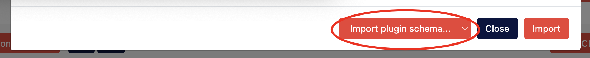

Developing
Corpora was built with the DH developer in mind just as much as the DH scholar. It was created as a way to flexibly handle a wide variety of DH projects with minimal effort while also empowering the developer to focus on the more innovative aspects of a given project. Below are detailed the affordances of corpora tailored specifically for developers, listed in order of complexity.
Content Type Templates
From a developer's perspective, a Content Type in Corpora is a class whose properties and methods are largely defined by the Content Type Manager (essentially a data schema editor) available on the Admin tab of a given corpus. Content Type Templates are the convention Corpora uses to allow developers to control how instances of content get rendered, whether as a textual label, an HTML snippet, a JavaScript component, an XML document, etc. This rendering is done using the Jinja2-style Django template convention, and indeed it's recommended to refer to Django's documentation when editing or creating templates (particularly as a reference for Django's built-in template tags).
Editing Label Templates
By way of example, let's consider the following Content Type used to keep track of named entities throughout a corpus of XML documents:

There are four fields defined for this Content Type, which means any instance of this content will be an object with at least four properties. If we were to name an instance of this class Entity, then you'd access its four properties like this using pseudocode:
Entity.xml_id
Entity.entity_type
Entity.name
Entity.uris
There are also always three more hidden properties available for any instance of Content:
Entity.id # a unique, alphanumeric identifier
Entity.uri # a unique URI for this content which includes its corpus ID
Entity.label # a textual representation of the content
The label property for any given piece of content in Corpora is generated using the template called "Label" which can be edited using the Content Type Manager.
To edit the Label template, go to the Admin tab of your corpus, scroll to the Content Type Manager, and expand out the tray for a given Content Type. Scroll to the bottom of that tray, and locate in the footer of the table that lists the fields for your Content Type the dropdown prefixed with the label "Edit Template." Click the "Go" button to begin editing the template used by Corpora to generate textual labels for that Content Type:

In this particular case, the template for our label looks like this:
{{ Entity.name }} ({{ Entity.entity_type }})
When editing a Content Type template in Corpora, the template's "namespace" has available to it an instance of the content named the same as the Content Type (i.e. Entity). Django's templating system has a convention whereby you can dynamically insert the value for an object's property by surrounding it with double curly-braces. So to output the value of your Entity's name property in a template, you'd use:
{{ Entity.name }}
Notice this is how our template example begins. The rest of the example includes a space, open parenthesis, the output of the value for the Entity's entity_type field, and then a closing parenthesis. Given this template, if our instance of the Entity Content Type had the value "Maria Edgeworth" for the field name, and "PERSON" for the field entity_type, the textual label for that piece of content would look like this:
Maria Edgeworth (PERSON)
Django's templating system is powerful, as it also provides affordances for boolean logic in the form of if/else statements. Let's say we want our label template to be a little more sophisticated by having it provide default values for fields that have no value. In this case, we'll leverage Django's built-in {% if ... %} syntax:
{% if Entity.name %}{{ Entity.name }}{% else %}Unknown{% endif %} ({% if Entity.entity_type %}{{ Entity.entity_type }}{% else %}UNKNOWN{% endif %})
Using this new template, if the Entity's name property has no value, the string "Unknown" will be output. Similarly, if entity_type has no value, "UNKNOWN" will be output.
Note that when you make changes to a template in Corpora's Content Type Manager, you must click the orange "Save" button on the "Edit Template" modal, and must also click the orange "Save Changes" button in the footer of the Content Type Manager for template changes to be "committed" to your data schema. Also note that when the Label template is changed, Corpora automatically fires off a reindexing task for the Content Type in question, as well as for any other Content Types in your corpus that reference the Content Type in question. Depending on how many instances of these Content Types you have in your corpus, this reindexing may take some time.
Creating New Templates
Beyond specifying how content labels get created, Corpora's Content Type templating system allows you to create almost any kind of web-based representation of your content by allowing you to build a template and choose the appropriate MIME type for that representation.
Building off our Entity example, let's say you wanted to create TEI XML representations for entities in your corpus. In the Content Type Manager for your corpus, you'd expand out the tray for your Content Type and, next to the "Go" button for editing an existing template, you'd click the "New Template" button to bring up the template editor:

Give your template a URL-friendly name (no spaces or special characters), provide the content for your template, and choose an appropriate MIME Type (in this case, text/xml so we can serve up XML for the output of this template). In case the image above is too small or blurry, here's the content for this template:
<person xml:id="{{ Entity.xml_id }}">
<persName>{{ Entity.name }}</persName>
</person>
Click the "Save" button on the template editing modal, and then click "Save Changes" at the bottom of the Content Type Manager. Once this happens, your new template is available to be rendered.
Viewing Rendered Templates
To view the output of a template for an instance of content, you'll need to construct a URL that follows this convention:
[Your Corpora Instance]/corpus/[Corpus ID]/[Content Type]/[Content ID]/?render_template=[Template Name]
In this example, let's assume your Corpora instance is hosted at https://mycorpora.org, your Corpus ID is 62f554a9837071d8c4910dg, the Content Type is Entity, the ID for your instance of Entity is 6691462b32399974cfc2cb1a, and the template you want to render is our new TEI-XML-Person template. Given these assumptions, the URL would look like:
https://mycorpora.org/corpus/62f554a9837071d8c4910dg/Entity/6691462b32399974cfc2cb1a/?render_template=TEI-XML-Person
Your browser should then display the rendered output for your content as an XML document (screenshot from Google Chrome):

The Corpus API for Python
The corpus API for Python does most of the heavy lifting behind the scenes in terms of the C.R.U.D. (creating, reading, updating, and deleting) operations on corpus data. Understanding how to use it is crucial to using the corpus iPython notebook and writing plugins for Corpora. At its heart, the API leverages MongoEngine--an ORM for MongoDB designed to behave similarly to the SQL-oriented ORM baked into Django. In fact, each corpus or content object is a MongoEngine Document under the hood, and when you query for content using the corpus API, you're actually working with MongoEngine QuerySets. As such, the majority of the documentation for the corpus API is covered by MongoEngine's documentation, so much of the documentation here will be in the form of examples.
Creating a Corpus
from corpus import Corpus
my_corpus = Corpus()
my_corpus.name = "MTC"
my_corpus.description = "My Test Corpus"
my_corpus.save()
Upon running the above script, the my_corpus variable will be an instance of mongoengine.Document. After saving it, the id property of my_corpus will be a BSON ObjectId, which is how MongoDB uniquely identifies each document. The alphanumeric string representation of the ObjectId can be acquired like so:
my_corpus_id_as_a_string = str(my_corpus.id)
Retrieving a Corpus
from corpus import get_corpus
my_corpus = get_corpus('6661e28c4399e45f0bfd2121')
The get_corpus function will accept as its first parameter either a string or a BSON ObjectId and will return an instance of the Corpus object, which is ultimately a MongoEngine Document with the following properties:
| Property | Data Type | Purpose |
|---|---|---|
| name | string | To provide a brief project label, typically an acronym. |
| description | string | To provide a full project descriptor, typically the spelled out version of the project's name. |
| uri | string | This property is generated when the corpus is first saved, and it provides a unique URI for the corpus as it exists on the instance of Corpora hosting it. |
| path | string | Generated upon first save. It contains the file path to the corpus' files within the Corpora Docker container, should it have any. |
| kvp | dictionary | KVP stands for "key/value pairs," and it's intended to house arbitrary metadata (rarely used). |
| files | dictionary | The keys for the dictionary are unique hashes based on the file's path. These are long alphanumeric strings. The values are File objects. |
| repos | dictionary | The keys are the name given to the repo, and the values are Repo objects. |
| open_access | boolean | A flag for determining whether a corpus is open access, making its read-only API publicly available. |
| content_types | dictionary | The keys are the name of a given Content Type, and the values are a dictionary specifying the metadata for a given Content Type and its fields. |
| provenance | list | A list of completed jobs for this corpus. |
A corpus object also has several methods which will be covered in subsequent sections.
Creating Content
With a corpus object in hand, you can create content using the corpus' get_content method. This example assumes you have a Content Type called "Document" in your corpus:
new_document = my_corpus.get_content('Document')
new_document.title = "On Beauty"
new_document.author = "Zadie Smith"
new_document.save()
Calling your corpus' get_content method by only passing in the Content Type name will return an instance of a MongoEngine document with that Content Type's fields as properties to be set. Once you've set those field values, you call the save method to save the content and assign it a unique ID.
Note: When saving content, the data is first saved to MongoDB. Post-save events then fire which also index the content in Elasticsearch and link the data in Neo4J. As such, saving content can be relatively time consuming, especially when saving in bulk. In cases where bulk saving needs to occur, you can turn off indexing and/or linking like so:
# Saves to MongoDB and Neo4J, but not Elasticsearch:
new_document.save(do_indexing=False)
# Saves to MongoDB and Elasticsearch, but not Neo4J:
new_document.save(do_linking=False)
# Saves only to MongoDB:
new_document.save(do_indexing=False, do_linking=False)
If you later want to fire off a job to index and link all of your content, you can do so like this:
my_corpus.queue_local_job(task_name="Adjust Content", parameters={
'content_type': 'Document',
'reindex': True,
'relabel': True
})
Retrieving Content
Your corpus' get_content method is also useful for retrieving content when you know either the ID or exact field values for your content. When using get_content to retrieve content, you're ultimately querying MongoDB:
# Query for a single piece of content with the ID known:
content = my_corpus.get_content('Document', '5f623f2a52023c009d73108e')
print(content.title)
"On Beauty"
# Query for a single piece of content by field value:
content = my_corpus.get_content('Document', {'title': "On Beauty"}, single_result=True)
# Query for multiple pieces of content by field value:
contents = my_corpus.get_content('Document', {'author': "Zadie Smith"})
for content in contents:
print(content.title)
"White Teeth"
"On Beauty"
# Query for all content with this Content Type:
contents = my_corpus.get_content('Document', all=True)
When retrieving a single piece of content, you receive a MongoEngine Document. When retrieving multiple pieces of content, you receive a MongoEngine QuerySet. QuerySets are generators (can be iterated over using a for-loop), but also have their own methods, like count:
contents = my_corpus.get_content('Document', all=True)
contents.count()
42
Editing Content
Once you've retrieved a single piece of content using get_content, you can directly edit its field values and then call save to edit it:
content = my_corpus.get_content('Document', '5f623f2a52023c009d73108e')
content.published_year = 2005
content.save()
Deleting Content
Deleting content is as simple as calling the MongoEngine Document's delete method:
content = my_corpus.get_content('Document', '5f623f2a52023c009d73108e')
content.delete()
Note: because content can be cross-referenced in arbitrary ways, deleting content saves a stub in the database that tells Corpora to sweep for instances of other content that references the deleted content so as to remove those references. When deleting large quantities of content, this can cause a backlog of deletion stubs. If you know you'll be deleting a large amount of content, and you also feel certain there's no need to track these deletions in order to hunt for stale content references, you can skip the creation of a deletion stub like so:
content.delete(track_deletions=False)
Working with Cross-Referenced Content
Much of the value of Corpora's Neo4J database is in its ability to keep track of the way your content is related, allowing the interface to visualize these connections. Content becomes "related" to other content via fields of type cross-reference.
By way of example, let's assume you're working with a corpus that has two Content Types: Entity and Letter. And let's say that the Letter has a field called recipient of type cross-reference that specifically references the type Entity. In this way, a Letter can reference a specific Entity via its recipient field. Let's create an Entity and a Letter, and "relate" them appropriately:
entity = my_corpus.get_content('Entity')
entity.name = "Elizabeth Barrett Browning"
entity.save()
letter = my_corpus.get_content('Letter')
letter.contents = "Real warm spring, dear Miss Barrett, and the birds know it, and in Spring I shall see you, really see you..."
letter.recipient = entity.id
letter.save()
Note how when specifying the value of the recipient field for our instance of Letter, we used the id property of Entity. If the "multiple" box is checked when creating a field of type cross-reference, the field is actually a list, and so content ID's must be appended to the list:
letter.recipients.append(entity.id)
letter.save()
You may query for content using cross-referenced fields, and the easiest way to do this is with the ObjectId (or its string representation) of the cross-referenced content. For example:
letters_to_elizabeth = my_corpus.get_content('Letter', {'recipient': '66a166e56cf2fb23103b58b2'})
You may also access the values of nested fields for cross-referenced content like so:
first_letter = letters_to_elizabeth[0]
print(first_letter.recipient.name)
"Elizabeth Barrett Browning"
Working with Files
In Corpora, files belonging to a corpus or to a piece of content are ultimately registered as File objects, which themselves are a MongoEngine Embedded Document with the following properties:
| Property | Data Type | Purpose |
|---|---|---|
| path | string | To keep track of the file path as it exists inside the Corpora container. |
| primary_witness | boolean | To flag whether the file should be the primary "witness" or digital surrogate for the content in question. Currently only used in the context of the Document plugin. |
| basename | string | The filename of the file (without the path), i.e. "data.csv" |
| extension | string | The extension of the file, i.e. "csv" |
| byte_size | integer | The size of the file in bytes |
| description | string | Human-readable description of the file |
| provenance_type | string | To track what kind of thing originated this file, i.e. "Tesseract OCR Job" |
| provenance_id | string | A unique identifier for the thing that originated this file, i.e. "4213" |
| height | integer | The height in pixels of the file (if it's an image) |
| width | integer | The width in pixels of the file (if it's an image) |
| iiif_info | dict | A dictionary representing the kind of metadata you get when querying for /info.json on a IIIF server |
While those properties can be helpful, the only required property when creating a File object to represent a file is the path. The path of a file is always relative to the Corpora container. When the file is directly associated with a corpus, it lives in the /files directory, itself living in the directory specified by the corpus' path property. A directory is created in the Corpora container any time a corpus is created, and its path always looks like /corpora/[corpus ID]. As such, files directly associated with a corpus should live inside the /corpus/[corpus ID]/files directory.
The best way to associate a file with a corpus is via the corpus' homepage by going to the "Metadata" tab and clicking the orange "Import" button next to "Corpus Files." When you import files like this, it saves them in a files directory living inside of the directory specified in the path property of the corpus. Imported files are also registered in the files dictionary of your corpus object.
The keys for the files dictionary of a corpus are hashes based on the file's path--this is to provide a URL-friendly way of accessing them. This makes retrieving them programmatically in Python a little unintuitive, however. Let's say you upload a file called entities.csv to your corpus. To access that file with Python, you'll need to get its path like so:
entities_csv_path = None
for file_key in my_corpus.files.keys():
if 'entities.csv' in my_corpus.files[file_key].path:
entities_csv_path = my_corpus.files[file_key].path
Content Types can also specify "File" as a type of field, and in those cases, you may directly access the path property of the file (no intervening dictionary with file key hashes):
photo = my_corpus.get_content('Photo', '66a166e56cf2fb23103b6h7')
photo.original_file.path
When files belong to an instance of content (rather than directly associated with a corpus), that piece of content gets its own path property and a directory is created for it (directories are normally not created for content--only when they have files associated with them). Content paths always look like this:
/corpora/[corpus ID]/[Content Type]/[breakout directory]/[content ID]
Given that millions of instances of a Content Type could exist for a corpus, Corpora implements a "breakout directory" to prevent any one directory from containing millions of subdirectories!
Much like with a corpus, files associated with content live inside the /files subdirectory of a content instance's path, i.e.:
/corpora/[corpus ID]/[Content Type]/[breakout directory]/[content ID]/files
When programmatically associating a file to a corpus or piece of content, it's important for that file to live in the correct place, as this allows all the files belonging to a corpus to be exported and restored appropriately.
To programmatically associate a file directly with a corpus, first upload it to the corpus' appropriate /files subdirectory and make note of its full path. Then:
from corpus import get_corpus, File
# store the path to the file in a variable
my_file_path = '/corpora/6661e28c4399e45f0bfd2121/files/data.csv'
# retrieve your corpus
my_corpus = get_corpus('6661e28c4399e45f0bfd2121')
# create an instance of the File object by using its "process" method
# which takes at minimum the path to the file
my_file = File.process(my_file_path)
# generate a file key for storing the file in the corpus
my_file_key = File.generate_key(my_file_path)
my_corpus.files[my_file_key] = my_file
my_corpus.save()
Note the use of the process class method of File. That method takes a file path, checks to see if the file exists, gathers some minimal metadata about the file (like file size), and returns a File object. Because files directly associated with a corpus are stored using a file key, we generate one with the generate_key method of File.
The Corpus Notebook
Corpora makes available to admins and corpus Editors the ability to launch an iPython notebook associated with your corpus. This is especially useful for loading and transforming data, or for developing code that will eventually live as a Task inside of a plugin.
Launching the Notebook
To launch the corpus notebook, navigate to your corpus' homepage and click on the "Admin" tab. Click the orange "Launch Notebook" button to the right of the "Running Jobs" section. This will cause the page to reload, and a message should appear saying Notebook server successfully launched! Access your notebook here. Click on the "here" link to open your notebook in a new browser tab.
Setting up the Corpus Python API
Once you've opened your notebook, you'll see that the first cell has been created for you. In it is code that must be run in order for you to make use of the Corpus Python API. Once you run that cell, you'll have access to the variable my_corpus which is an instance of the Corpus object.
Python Packages
For a list of Python packages installed in your notebook environment, see the requirements.txt file used by the build process for the Corpora container. This list of packages has been kept relatively minimal in order to keep the size of the Corpora container manageable. That said, additional packages can be installed using the following methods.
Installing at Runtime
To install a given package (like, say, pandas) at runtime, simply prefix a pip install command with an exclamation point in a notebook cell and execute it. For example:
!pip install pandas
This will prompt pip (the Package Installer for Python) to download and install the package to the "user installation" of Python. Specifically, this is found at /conf/plugin_modules/lib/python3.11/site-packages inside the Corpora container. As instructed in the deployment documentation, you should have various subdirectories inside a data directory on your host machine mounted inside of Corpora, and one of those subdirectories is conf, corresponding to the /conf path inside the Corpora container. As such, assuming the Corpora data directory you set up on your host machine is at /corpora/data, you'll find packages installed in this manner in /corpora/data/conf/plugin_modules/lib/python3.11/site-packages on your host machine. Because these files are living in a directory mounted from your host computer, any packages you install at runtime will persist until you delete or uninstall them.
Installing via Plugin
Corpora is built with a plugin architecture allowing you to extend its functionality. One way to ensure that certain Python packages are installed when the Corpora container first launches is to specify them in a requirements.txt file in the directory for your plugin. Note that for Corpora to look for that requirements.txt file, your plugin must be enabled as instructed here, and enabling a plugin (as well as installing packages specified via requirements.txt) requires that you restart the Corpora container. Once Corpora has installed your packages in this way, they are persisted at the same /conf/plugin_modules/lib/python3.11/site-packages location and won't have to be installed during subsequent restarts.
Limitations
While your notebook is saved as you go and can be returned to over multiple sessions, at this time Corpora only supports a single notebook per corpus. Also, at this time only a single notebook can be running on a given instance of Corpora at any given time. As such, should you be working in your notebook, and should another user attempt to launch their own corpus notebook, your notebook will be shut down and they will have the active notebook session.
Building Corpora Plugins
Corpora's plugin architecture allows you to extend the functionality of Corpora by adding custom Content Types, asynchronous Tasks, and even new REST API endpoints or public facing web pages. In this way, Corpora's codebase can remain relatively generic while the data schema and functionality of a custom project can be contained in a separate and distributable codebase.
Minimum Requirements
For Corpora to recognize your plugin, you must choose a name for your plugin that adheres to the Python convention for package and module names, i.e. short, all lowercase, and usually one word or acronym, though underscores are okay if necessary (no other special characters or spaces). For the purposes of this documentation, we'll assume you're creating a plugin named survey.
Having chosen your name, create a directory with that name, and inside it place an empty file named __init__.py:
survey
│ __init__.py
Technically, placing this directory in the correct place, enabling the plugin, and restarting Corpora according to these instructions is all that is required for your plugin to work. At this point, however, the survey plugin does nothing useful. See below for the various ways to build functionality for your plugin.
Custom Content Types
Often, the various tasks and functionality of your plugin require specialized Content Types for storing idiosyncratic data. The tesseract plugin, for instance, requires a Content Type called TesseractLanguageModel in order to store models for specific languages or fonts that can be trained using Corpora's interface.
As for our survey plugin, let's create some Content Types to keep track of surveys, questions, sessions, and responses. The easiest way to go about this is to create a new corpus and use the Content Type Manager to craft your Content Types. Here are the various Content Types we'll create:
Survey
| Field | Label | Data Type |
|---|---|---|
| name | Name | Text (English) |
| open | Open? | Boolean |
Question
| Field | Label | Data Type |
|---|---|---|
| survey | Survey | Cross-reference (Survey) |
| query | Query | Text (English) |
| query_choices | Query Choices | Text (English), multiple |
| order | Order | Number |
Session
| Field | Label | Data Type |
|---|---|---|
| survey | Survey | Cross-reference (Survey) |
| respondent_name | Respondent Name | Text (English) |
| respondent_email | Respondent Email | Keyword |
| date_taken | Date Taken | Date |
Answer
| Field | Label | Data Type |
|---|---|---|
| session | Session | Cross-reference (Session) |
| question | Question | Cross-reference (Question) |
| response | Response | Text (English) |
Once these Content Types have been created in your Content Type Manager, the easiest way to package them with your plugin is to download the JSON representation of your schema by clicking the export button in the footer of the Content Type Manager, which looks like this:

Clicking the schema export button will kick off a download of the JSON representation of your corpus as a file named schema.json. The next step is to edit that file with any text editor to convert the JSON to valid Python code. This can be done with three simple Find and Replace operations:
- Replace "true" with "True"
- Replace "false" with "False"
- Replace "null" with "None"
Once you've done this, create a file called content.py and save it in your plugin directory.
survey
│ __init__.py
│ content.py
Edit content.py, and create a single variable named REGISTRY, setting it equal to the Content Type schema you exported and converted to Python code. Here's a snippet of what the first lines of that file would look like now:
REGISTRY = [
{
"name": "Survey",
"plural_name": "Surveys",
"fields": [
{
"name": "name",
"label": "Name",
"indexed": False,
"unique": False,
"multiple": False,
"in_lists": True,
"type": "text",
...
...
]
Assuming you've enabled this plugin and restarted Corpora, you should now be able to go into the Content Type Manager for any corpus and click on the schema import button, which looks like this:
This will open a pop-up modal with a text editor field for copying and pasting JSON. Below that field is a "Import plugin schema..." dropdown that looks like this:

This dropdown will allow you to select one or all of the Content Types associated with your plugin. Once you've made your choice, click the orange Import button. Your Content Types should now appear in the Content Type Manager. Be sure to click Save Changes to commit that schema to your corpus.
If you would like to add custom functionality to your Content Types that can be used in the context of Python, you can inherit the Content class and write your own code to override or extend existing properties and methods. To do this, you must set the inherited_from_module and inherited_from_class keys in the schema for your Content Type (as saved in the REGISTRY variable). You must also indicate whether certain fields are inherited from your custom class by setting inherited to True in your data schema for those fields. To see an example of this, see the schema for Document and the custom classes below it in the code for the Document plugin that comes built-in to Corpora.
Custom Tasks
Corpora's plugin architecture allows you to create asynchronous tasks that can be launched programmatically, as well as from the Admin interface of a given corpus (given certain conditions). The following will expand on our survey plugin by adding a task as an example. Developers are also encouraged to view the source code for some existing tasks, such as for the document and tesseract plugins.
Much like with custom Content Types for plugins, when creating custom tasks you'll want to create a file called tasks.py and place it at the root level of your plugin directory, i.e.:
survey
│ __init__.py
│ content.py
│ tasks.py
In tasks.py, you'll need to create a variable called REGISTRY and set it equal to a Python dictionary, where the keys are the unique names for your tasks and the values are nested dictionaries with the specifications for your task. Below is an example for a task that will generate a survey report. The various settings in this example with be expounded upon below.
REGISTRY = {
"Generate Survey Report": {
"version": "0",
"jobsite_type": "HUEY",
"content_type": "Corpus",
"track_provenance": True,
"create_report": True,
"module": "plugins.survey.tasks",
"functions": ['generate_survey_report'],
"configuration": {
"parameters": {
"session": {
"value": "",
"label": "Survey Session",
"note": "Select the survey taking session for which to generate a report.",
"type": "xref",
"content_type": "Session"
}
}
},
}
}
Task Settings
version (string): When tasks are first registered by Corpora, the task name, task version, and task parameters are copied to the database for quick retrieval. As you iteratively develop your task, you may need to adjust the available parameters. To get Corpora to re-register your tasks's parameters, you'll want to bump up the version number (i.e. change the value 0 to 1).
jobsite_type (string): At present, only the value HUEY is supported, as tasks are only run using the huey task queue built into Corpora. In the future, other jobsite types (such as SLURM) may be supported. A jobsite is intended to be something like "the server or environment where Corpora tasks are run." At present, Corpora creates a single jobsite called Local when first initialized, and that Local jobsite is of type HUEY. Jobs run on this local jobsite are run in the same Corpora container that serves the web application, and the number of jobs (or job processes) that can be run concurrently corresponds to the CRP_HUEY_WORKERS environment variable for the Corpora container, which by default is 10.
content_type (string): All tasks must target (or be associated with) a particular Content Type. While a corpus is technically composed of Content Types, Corpus is a valid value here. Tasks that have Corpus as their Content Type and track_provenance set to True may be launched from the Admin tab of a corpus.
track_provenance (boolean): Setting track_provenance to True causes Corpora to save a record of having run a job with this task on the target. From within the Corpus Python API, recorded jobs can be viewed by referencing the provenance property of a given instance of content, as well of a corpus itself. Setting track_provenance to False will prevent Corpora from saving a record of jobs run with this task, and will also prevent users from being able to launch the job from the Admin tab of the corpus. This is useful for tasks that will only be run programmatically.
create_report (boolean): Setting create_report to True will cause any jobs running this task to create a plain text file with some generic information about the job at the top. It also allows for the task to write messages to this file about the task as it runs. For jobs that are launched from the Admin tab of a corpus, those reports can be read via the web interface for Corpora both while a job is running and after it has been completed. Examples for writing messages to the report can be viewed in the example code for a task provided further on in this example.
module (string): This is the path to the module containing the function(s) that will be run for this task, and is almost always plugins.[plugin name].tasks.
functions (list of strings): This is a list of the function names that should be called sequentially as part of the task. Each of these names must correspond to functions that live in the module specified by the module setting described above. Normally this will include only a single function, but some situations may require that multiple functions be run one after the other. Corpora's job queue is capable of determining when one function's execution has completed, and will pass the job onto the next function in this list until all have been completed. For an example of this kind of function execution chaining, see the OCR Document with Tesseract 5 task.
configuration (dictionary): This is intended to store configuration options that are specific to the jobsite, including the available parameters for the user to provide when launching the job. At present, the only key that Corpora looks for is parameters, though in the future more keys may live here, such as settings specific to SLURM.
configuration -> parameters (dictionary): This dictionary is nested under the parameters key which is part of the configuration dictionary. It's intended to provide the various parameters a user can configure when launching the job--when launching a job from the Admin tab in Corpora, these parameters are used to construct a web form for the user. The keys for this dictionary are intended to be the names of parameters passed into the job, and should follow the PEP 8 convention for variable names. The value for these keys should be a dictionary with settings that specify what type of parameter this is, what the default value should be, what the label for the parameter should be on the constructed web form, and the text for a note that is provided on the web form for that parameter. As such, type, value, label, and note are keys you can use for this dictionary that Corpora will recognize and act on accordingly. Depending on the value of type, certain other keys may also be expected. Below is a table describing the various parameter types.
| Type | Example Value | Web Form Equivalent | Additional Parameter Keys Expected |
|---|---|---|---|
| text | "OCR run 42" | Input of type text | None |
| boolean | True | Checkbox | None |
| password | "secretphrase" | Input of type password (text entered here is obscured by asterisks) | None |
| pep8_text | "like_a_variable_name" | Input of type text, with PEP 8 formatting enforced via JavaScript | None |
| choice | "Option B" | A dropdown menu with the options specified by the additional choices key |
choices, which is a list of strings |
| xref | The string representation of an ObjectId | A UI for selecting a specific piece of content of the Content Type specified by the additional content_type key |
content_type, which is a string |
| corpus_file | "/path/to/a/file" | A dropdown menu with filenames as options (these must be files directly associated with a corpus via the Metadata tab) | None |
| corpus_repo | "project-tei" | A dropdown menu with the names of Git repositories as options (these must be directly associated with a corpus via the Metadata tab) | None |
| content_type | "Survey" | A dropdown menu with corpus Content Types as options | None |
| content_type_field | "Survey->name" | A dropdown menu with the fields for corpus Content Types as options | None |
When a user launches a job, their selection for a given parameter is stored in the value key for a given parameter and passed to the task's function(s) by way of a job object (described below).
Task Functions
When tasks are registered by Corpora at startup, Corpora stores the name of the function(s) to call when a job is launched with that task (a job is ultimately a task that is run at a particular place and time and by a particular user). Those functions are normally defined in tasks.py below the REGISTRY variable specified above. Here's an example of a simple task function for our survey plugin with details explained below:
from huey.contrib.djhuey import db_task
from corpus import Job
REGISTRY = { ... }
# The db_task decorator is necessary so Huey is aware of it as an available task to run. It also allows you to specify
# the priority for this task, which only matters if more jobs are queued than there are Huey workers available to run
# them. In those situations, the higher the integer you assign to priority, the more priority it has to run over tasks
# with a lower priority.
@db_task(priority=4)
def generate_survey_report(job_id): # Task functions always take a single parameter, which is the ID of the job.
job = Job(job_id) # You instantiate a Job object by just passing in its ID
job.set_status('running') # The set_status method for job allows you to notify Corpora that the job is running
# Getting the value of the 'session' parameter which was selected by the user:
session_id = job.get_param_value('session')
# Session is a custom Content Type specified in content.py for our plugin. We can get an instance of that Content
# Type by calling the get_content method of our corpus object, which is always set for an instance of Job:
session = job.corpus.get_content('Session', session_id)
# Checking to see if we were able to successfully retrieve an instance of Session:
if session:
# Calling the 'report' method of the job object to log a message to the job report:
job.report(f"Survey report for {session.survey.name} taken by {session.respondent_name}:")
# The get_content method of the corpus object can take as a second parameter a dictionary specifying our
# query, and returns a MongoEngine Queryset with the results. The QuerySet object has an order_by method
# that takes as one or more parameters the fields you wish to sort by. In this case we're sorting by the
# 'order' field (the + symbol as a prefix specifies that we're sorting in ascending order):
questions = job.corpus.get_content('Question', {'survey': session.survey.id}).order_by('+order')
# Here we're retrieving the number of questions for the survey so we can report a percentage complete
# for our job as we iterate over them. In this example, the questions and answers will be iterated over
# nearly instantaneously, but it's included here for reference purposes:
total_questions = questions.count()
questions_reported = 0
# Querysets can be iterated over, yielding MongoEngine documents corresponding to each piece of content:
for question in questions:
# Here we're retrieving the survey taker's answer to this question. When passing in True for the optional
# 'single_result' keyword parameter, we're specifying that we want a single MongoEngine document as the
# result (instead of a Queryset):
answer = job.corpus.get_content('Answer', {'session': session_id, 'question': question.id}, single_result=True)
# Here we're simply outputting to the job report the language of the question, and on the line directly
# below it outputting the user's response:
job.report(f"QUESTION: {question.query} \n ANSWER: {answer.response}\n\n")
# Here we're reporting our job progress in terms of percent complete using the set_status method of our job:
questions_reported += 1
job.set_status('running', percent_complete=int( (questions_reported / total_questions) * 100 ))
# Now that we've successfully completed our task, we use the 'complete' method of our job object, passing in the
# status as the first parameter:
job.complete('complete')
# Since no session was found, we error out our job by marking it as complete and also passing in 'error' as the
# status for our job. We're also providing an error message to report:
else:
job.complete('error', error_msg="No session was found for generating this report!")
The example task function above is intended to take a completed survey and generate a simple report by providing the survey questions with the user's response printed beneath them. Here are some key takeaways:
- Task functions should use the
db_taskdecorator, and can optionally specify a priority (higher = more priority) for the function as it competes with other tasks on Corpora's job queue. - Task functions take a single parameter, which is the ID for the job.
- Once
Jobobjects are instantiated using the job ID, you can access the pertinent corpus for the job using thecorpusproperty of the job object. - The status of a running job can be set using the
set_statusmethod, including an optionalpercent_completeparameter to report on the amount of progress a job has made toward completion. - Jobs are then completed using the
completemethod of Job, passing in either "complete" or "error" to indicate job completion or erroring out respectively. If a job is errored out, an optional error message can be specified using theerror_msgkeyword parameter.
Subprocesses
At times, it might make sense to spawn subprocesses in order to complete a complicated task in parallel. Subprocesses also make use of the Huey job queue to run, and from Huey's perspective, they are just another job. The Job object in Corpora, however, has affordances for considering these jobs as subprocesses of an already running job. Here's an example, assuming a Corpora task that takes as a parameter a path to a document to be OCR'd:
from huey.contrib.djhuey import db_task
from corpus import Job
REGISTRY = { ... }
@db_task(priority=4)
def ocr_document(job_id):
job = Job(job_id)
document_path = job.get_param_value('document_path')
job.set_status('running')
# Assume code here for building a list of paths for page images extracted from the document, stored in a list called 'page_paths'
page_paths = [ ... ]
for page_path in page_paths:
huey_task = ocr_page(job_id, page_path)
job.add_process(huey_task.id)
@db_task(priority=3, context=True)
def ocr_page(job_id, page_path, task=None):
job = Job(job_id)
# Assume the existence of another function that actually performs the OCR given the path to a page
actually_do_the_ocr(page_path)
if task:
job.complete_process(task.id)
Here are some key takeaways from the example:
- Functions that are intended to be called and run as subprocesses should also have the db_task decorator, but must set the optional keyword parameter
contexttoTrue. This ensures that when Huey runs the job by calling the task function, it passes in contextual information, namely a Task object with Huey's internal task ID. - You can simply call functions that have the db_task decorator. When you do this, the function is queued up to be run in Huey's job queue, and a Huey Task object is immediately returned, which has
idas a property. When you pass that ID into theadd_processmethod of the Corpora Job object, Corpora registers that ID as a subprocess for the running job. Corpora will not consider the job complete until all subprocesses are marked as complete. - To mark a subprocess as complete, simply call the
complete_processmethod of Job, passing in Huey's internal task ID as its identifier.
When using subprocesses like this, it's not necessary to manually mark the Corpora job as complete--Corpora's own job manager will do so once all subprocesses have been marked as completed. For an example of the use of subprocesses, see the tesseract plugin, and specifically the interaction between the ocr_document_with_tesseract and ocr_page_with_tesseract.
Beyond Content and Tasks
Because Corpora plugins are essentially Django apps, you can also create custom views and templates, include static files, and even create an entire frontend for your plugin. Documentation for this level of custom development is beyond the scope here, as it essentially involves Django development. You can see an example of a fully fledged frontend for a plugin by examining the codebase for the New Variorum Shakespeare plugin for Corpora.
Developer FAQ's
This section is intended to answer certain questions about how and why Corpora is built the way it is, and is intended for potential contributors to Corpora's codebase.
Why Django?
Django is a popular web framework written in Python. Python is one of the easiest procedural programming languages to learn, and is increasingly the lingua franca of the humanities and sciences, due to the strong support it has for things like machine learning and natural language processing.
Why so many databases?
One of the most glaring departures from the typical Django development pattern for Corpora is its reliance on a document (rather than relational) model for storing the majority of its data. There has long been interest in a document-based approach to writing Django apps, as evidenced by mongoengine, and MongoDB's own efforts to create an officially supported ORM for Django. This interest is driven by a desire for a more flexible, dynamic data schema that can change on-the-fly without so much hassle. This is one of Corpora's biggest conceits: it attempts to support project data schemas that are capable of evolving organically as the project develops, as is particularly appropriate to Digital Humanities projects.
Consider, for instance, what needs to happen when a user decides they want their data schema to support a many-to-many relationship. In the relational paradigm, this involves the need for an entirely new table (a cross-table) to track those relationships and requires any queries for that data to usually involve at least three tables. Should performant queries for this data become an important requirement, supporting both the retrieval of this data and retaining the ability to sort and filter on fields other than the primary keys for that cross-table generally requires some retooling of indexes, etc.
In the document-based paradigm, the establishment of a many-to-many relationship requires the addition of a single, multi-valued field to one of the two document collections. To borrow analogies from the object-oriented programming world, the relational model requires you to create an entirely new object (representing that cross-table), whereas the document-based model only requires adding a new property, i.e. an array, to one of the two objects in the relationship.
The complexity introduced by things like cross-tables required by the relational paradigm echoes across much of what Corpora tries to support, such as the ability to quickly export project data in the form of JSON. With the document-based model, this is a direct export (MongoDB document collections are expressed naturally as JSON). A cross-table would require at the very least either a new JSON file specifically for the relationship between objects or some kind of logic that embeds that relationship in one or the other JSON representations of the related objects.
The use of ElasticSearch and Neo4J are attempts to use databases that are tuned and purpose-built to perform full-text searching, sorting, and aggregating (ElasticSearch); and also to traverse the relational connections between datapoints in the form of a network graph (Neo4J). While this seems like both a redundancy in terms of data storage and the addition of a layer of complexity, the data living in those two databases are added/deleted/modified downstream (using signals) from any MongoDB operations, making them low-effort/high-reward additions. While for certain very large datasets that are constantly changing (on the order of hundreds of millions of datapoints and thousands of transactions per second), such duplication of data would have negative impacts both in terms of storage requirements and performance. The vast majority of Digital Humanities projects, however, are small in size and relatively static. For those projects, what matters most is flexibility in terms of the data schema, not efficiency in terms of storage or the performance of CRUD operations.
It may seem ridiculous that despite making use of MongoDB, ElasticSearch, and Neo4J, Corpora also relies on an sqlite relational database. This is an unfortunate side-effect of the fact that certain low-hanging-fruit, out-of-the-box functionalities of Django (like user management and authentication) require the use of its baked-in ORM for relational databases. The aforementioned project to create an official MongoDB ORM for Django may eventually obviate the need for this database.
Where does the core of Corpora's functionality live, code-wise?
The heart of Corpora's backend codebase lives here. This is a giant file containing the classes that define a Corpus, the Content Types that describe the various kinds of objects comprising a given corpus, the Fields that describe the various properties for those objects, and the abstract Content class that a given instance of content inherits in order to present a mongoengine Document dynamically built according to a given Content Type.
Inside that giant file are also classes that describe JobSites, Tasks, and Jobs in order to support Corpora's asynchronous job queue.
The frontend "heart" of Corpora's codebase is here. These are JavaScript objects that provide functionality for much of Corpora's web interface, including its Content Tables, its Job Manager, and its Content Graphs.
Why is this codebase missing certain necessities like comment headers above functions and code tests?
When I acquired my computer science degree in the early 2000's, certain coding conventions had not yet been widely embraced by developer culture at large--most code, for instance, did not live in git repositories! One of the conventions that had yet to become normalized is the tendency to break large files into smaller ones, ideally at least one file per class. Another is to always create copious documentation inside one's code, with the bare minimum being headers above each function that can be used to automatically generate API-level code documentation. The final, and perhaps most important convention that had not yet become normalized was the creation of code-tests that can be run any time changes to a codebase are made.
I realize that for Corpora to become more amenable to the developer culture at large, these housekeeping tasks are crucial. Particularly the creation of code-tests given the size and complexity of the project. My only excuse for the lack of these necessities so far is that the majority of Corpora's codebase was developed as a way to manage/develop multiple DH projects at once, each with its own idiosyncratic needs in terms of a data schema, while also each sharing the need for things like an interface for browsing and managing data, a REST API for accessing that data using 3rd-party tools or frontends, and a task queue for performing potentially long-running tasks to ingest or transform data. Rather than create 20 boutique web applications, I chose to focus my development time on a single core codebase that could grow over time to serve an increasingly diverse array of projects. I have also historically been the only full-time developer at the center I work for, so I just haven't had time to devote to making Corpora more friendly for other developers (and therefore more sustainable as a project).
My hope is that time to tend to these matters will manifest at my current position, or that one of the projects relying on Corpora will be awarded grant funds to hire external entities to perform this work. I also realize much of the tedium of things like creating header comments above classes and functions could be alleviated by the use of AI, so long as I also have the time to vet the results.
Why in the world would you use jQuery?
In the modern JavaScript development world, the use of jQuery is a crutch at best. For the first half of my career, however, the vast majority of the development work I performed was on the backend. While I've always been a full-stack developer, I wrote C# code and relied on the ASP.NET framework to create most of my applications. That framework (at least at the time) relied much more intensely on things like visual interface builders and "postbacks," such that it was rare that I needed to write more than a few lines of JavaScript. As such, in my initial forays into the language I very much looked for shortcuts and fell into the bad habit of using jQuery. I will slowly be untethering Corpora's frontend codebase from that library over time.
Rather unintentionally, however, my reliance on jQuery and the fact that I never got on the transpiler bus for JavaScript has resulted in what I now consider to be a good thing: no iota of Corpora's JavaScript codebase requires transpilation, which means there are zero NPM-style dependencies. In the world of DH, funding comes and goes, which means that projects can go years without being touched. The JavaScript world (particularly the one that relies entirely on transpilation), however, moves very quickly. I've encountered several projects where the build dependencies for a project have gone stale to the point of requiring a major refactor after a mere year or two of sitting on the shelf.
This unintentional place I find myself in has actually become a kind of philosophical stance when it comes to the Corpora codebase: at no point should its procedural code require a build step. While this may feel maddening to a frontend developer that relies on frameworks like React, I'm rather stubborn on this point, as it somewhat future-proofs its frontend codebase.
Why is a JavaScript error thrown on individual Content pages in the browser's inspect panel?
This error is a result of a hack I've made to the vis-network.js package that creates Corpora's network graphs. I've modified the physics algorithm to support what I call "directional wind," and added a section to the config that gets passed in to instantiate each graph, one that specifies a direction that blows each type of node in a particular direction for each iteration of the physics engine. This wind allows for the graph to tease itself out and become far more legible by subtly pushing similar nodes in the same direction, regardless of where they fall on the graph. I have made a corresponding feature request to this effect here. Unfortunately, viz.js rigorously vets its config objects and throws an error any time something is amiss, hence the big ugly error in the JavaScript console.